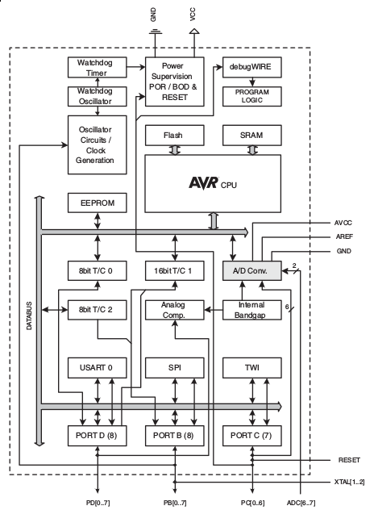
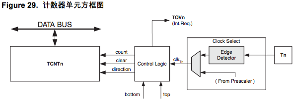
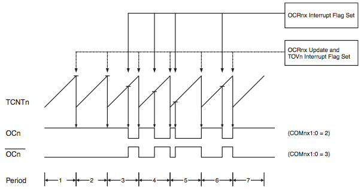
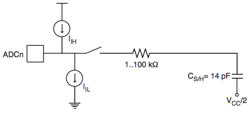

| 作者: | gashero |
|---|---|
| 日期: | 2011-11-05 |
目录
高性能、低功耗的8bit AVR处理器
先进的RISC结构：
- 131条指令，大多数为单周期
- 32x8通用工作寄存器
- 全静态操作
- 16MHz时16MIPS
- 只需要两个周期的硬件乘法器
非易失的程序和数据存储器
- 4/8/16KB的ISP Flash，擦写寿命10,000次
- 独立锁定位的可选Boot代码区，通过片上Boot程序实现IAP，真正的同时读写
- 256/512/512Byte的EEPROM，擦写寿命100,000次
- 512/1K/1KByte的SRAM
- 可以对锁定位ie编程以实现用户程序加密
外设特点：
- 两个独立预分频器和比较器的8bit的Timer/Counter
- 一个具有独立预分频、比较器、捕捉的16bit的Timer/Counter
- 独立振荡器的RTC
- 6通道PWM
- 8路10bit ADC(TQFP和MLF封装)
- 6路10bit ADC(PDIP封装)
- 可编程的穿行USART
- 主从模式SPI
- TWI
- 片内振荡器的看门狗定时器
- 片内模拟比较器
- 引脚电平变化可引发中断或唤醒MCU
特殊的微控制器特点：
- 上电复位、可编程的掉电检测
- 标定的片内RC振荡器
- 片内/片外中断源
- 5种休眠模式：空闲、ADC噪声抑制、省电、掉电、StandBy
I/O与封装：
- 23个可编程的IO口
- 32引脚TQFP与32引脚MLF封装
工作电压：
- ATmega48V/88V/168V：1.8~5.5V
- ATmega48/88/168：2.7~5.5V
工作温度：-40~80摄氏度
工作速度等级：
- ATmega48V/88V/168V：0~2MHz@1.8~5.5V，0~8MHz@2.4~5.5V
- ATmega48/88/168：0~8MHz@2.7~5.5V，0~16MHz@4.5~5.5V
极低功耗：
- 正常模式：1MHz，1.8V，300uA；32KHz，1.8V，20uA(含振荡器)
- 掉电模式：1.8V，0.5uA
基于AVR增强型RISC结构的8bit CMOS微控制器。数据吞吐率1MIPS/MHz。
结构框图：
AVR内核有32个通用工作寄存器，所有寄存器直接与算术逻辑单元(ALU)相连，是的一条指令可以在一个时钟周期内同时访问两个独立的寄存器。提高了代码效率。
@page 4-5
@page 6-13
@page 14-21
@page 22-31
@page 32-35
@page 36-46
@page 47-57
@page 58-74
外部终端通过INT0和INT1，或PCINT23..0来触发。只要使能了中断，即时这些引脚配置为输出，只要电平发生了变化，也会触发中断，可用于产生软件中断。PCINT23..16的电平变化还能处罚PCI2，PCINT14..8的电平变化还能触发PCI1，PCINT7..0触发PCI0。这些中断可以将器件从休眠模式唤醒。
INT0、INT1可以由上升沿、下降沿、低电平触发。由EICRA决定。电平中断检测是异步的，可将MCU从休眠唤醒。休眠过程中IO时钟是停止的。
通过电平中断从掉电模式唤醒MCU，要保证电平可以持续一段时间。如果触发电平在启动时间结束前就消失，则MCU会被唤醒，但中断不会触发。启动时间由熔丝位SUT和CKSEL决定。
EICRA(外部中断控制寄存器) ：定义 [7:-][6:-][5:-][4:-][3:ISC11][2:ISC10][1:ISC01][0:ISC00] 。
ISCxx的取值：
EIMSK(外部中断屏蔽寄存器) ：定义 [7:-][6:-][5:-][4:-][3:-][2:-][1:INT1][0:INT0] 。
EIFR(外部中断标志寄存器) ：定义 [7:-][6:-][5:-][4:-][3:-][2:-][1:INTF1][0:INTF0] 。
PCICR(引脚电平变化中断控制寄存器) ：定义 [7:-][6:-][5:-][4:-][3:-][2:PCIE2][1:PCIE1][0:PCIE0] 。
@page 77-78
8bit定时器/计数器模块，有两个独立的输出比较单元，支持PWM。
小写的"n"表示了T/C的序号，在此就是0，小写的"x"表示了输出比较单元，在此就是通道A或通道B。
T/C0的寄存器都是8bit的，中断请求的标识在TIFR0中，所有中断可以通过TIMSK0屏蔽。
T/C0可通过内部时钟源预分频驱动，或T0的外部时钟驱动，可选什么边沿。时钟选择模块的输出定义为定时器时钟clk_T0。
双缓冲的输出比较寄存器OCR0A、OCR0B持续与TCNT0对比，结果可用于产生PWM波，或在输出比较引脚OCR0A、OCR0B上产生频率变化输出。比较匹配事件海置位OCF0A、OCF0B，用于产生中断。
时钟源由时钟选择逻辑决定，通过TCCR0B的CS02:0控制。
可编程双向计数单元。
信号说明：
CPU何时都可以读写TCNT0，优先级最高。
计数序列由WGM02:0决定，其行为与OC0A、OC0B的波形有密切关系。TOV0溢出标识也与WGM02:0有关，可用于产生中断。
输出比较，硬件行为:
if TCNT0==OCR0A:
TIFR0.OCF0A=1
if TIMSK0.OCIE0A=1 and SREG.I=1:
ISR(TIMER0_COMPA_vect)
TIFR0.OCF0A=0
if TCNT0==OCR0B:
TIFR0.OCF0B=1
if TIMSK0.OCIE0B=1 and SREG.I=1:
ISR(TIMER0_COMPB_vect)
TIFR0.OCF0B=0
TIFR0.OCF0A和TIFR0.OCF0B可以通过写1来清零。
PWM模式时，OCR0x为双缓冲寄存器；正常模式和匹配时清零模式则没有双缓冲。双缓冲可以将更新OCR0x寄存器与top、bottom时刻同步，防止产生不对称的PWM脉冲，消除干扰。
强制输出比较，硬件行为:
if WMG02:0 != PWM:
if TCCR0B.FOC0x==1:
ISR(TIMER0_COMPx_vect)
如上表示：非PWM模式时，TCCR0B.FOC0x写1会产生比较匹配，叫强制输出比较。但此时不会置位OCF0x标识，也不会reload/clear定时器。OC0x引脚会更新。TCCR0A.COM0x1:0决定OC0x是置位、清零、翻转。
CPU对TCNT0的写操作会在下个时钟周期阻止比较匹配。可用于将OCR0x初始化为与TCNT0相同的值而不触发中断。不过在使用输出比较时改变TCNT0就有风险，不论T/C是否在运行。如果TCNT0=OCR0x，比较匹配就丢失了，造成不正确的波形。类似的，计数器降序时不要对TCNT0写入等于BOTTOM的数据。
OC0x的设置应该在设置数据方向寄存器之前完成。最简单的OC0x设置是在普通模式下利用强制输出比较FOC0x。即使在改变WGM时，OC0x也会一直保持其数值。
COM0x1:0和比较数据不是双缓冲的，改变立即生效。
COM0x1:0有两个功能：
如果COM0x1:0不全为零，则GPIO功能就变成了波形发生器。但OC0x是输入还是输出还是受到DDR控制。在使用OC0x功能之前要先设置DDR_OC0x为输出。
输出比较逻辑的设计允许OC0x的状态在输出前先初始化。注意某些COM0x1:0设置留给了其他操作。
COM0x1:0的意义在不同工作模式下有所区别。在所有模式，COM0x1:0=0表示波形发生器不会操作OC0x。
改变COM0x1:0会影响写入数据后的首次比较匹配。在非PWM模式，可以使用FOC0x立即产生效果。
工作模式由WGM02:0和COM0x1:0共同控制。比较输出模式对计数序列无影响，但波形产生器模式对计数序列有影响。COM0x1:0控制PWM输出是否为反极性。非PWM模式COM0x1:0控制输出是否应该在比较匹配时置位、清零、翻转。
WGM02:0=0。
普通模式，硬件行为:
TCNT0++
if TCNT0==(0xff+1):
TCNT0=0
TIFR0.TOV0=1
if TIMSK0.TOIE0==1 and SREG.I==1:
TIFR0.TOV0=0
ISR(TIMER0_OVF_vect)
不推荐在此模式下产生波形，因为占用CPU时间太多了。
WGM02:0=2，比较匹配时清零定时器。OCR0A用于调节定时器的分辨率，即TOP值。
CTC模式，硬件行为:
TCNT0++
if TCNT0==OCR0A:
TCNT0=0
TIFR0.OCF0A=1
if TIMSK0.OCIE0A==1 and SREG.I==1:
TIFR0.OCF0A=0
ISR(TIMER0_COMPA_vect)
在中断里可以更新TOP值，但是如果发生太频繁，且TOP和接近BOTTOM时，小心丢失比较匹配，即OCR0A小于TCNT0。此时会继续计数到0xff才会从0x00继续到TOP。
为得到波形输出，OC0A可以在比较匹配时改变电平。设置COM0A1:0=1来实现。需要先设置OC0A为输出。输出频率为 f_OCnx=f_clk_IO/(2*N*(1+OCRnx)) 。其中N为计数器预分频因子。
WGM02:0=3或7。可产生高频PWM波形，单斜坡工作，计数从BOTTOM到TOP，然后回到BOTTOM重新计数。
有两种快速PWM模式，WGM=3时，TOP=0xff，WGM=7时，TOP=OCR0A。对普通输出模式，OC0x再TCNT0==OCR0x时清零，再BOTTOM时置位；对反向比较模式，OC0x的动作相反。
工作与单斜坡模式，所以比双斜坡的相位修正PWM模式频率高一倍，适合于功率调节、整流、DAC。
快速PWM模式中，TCNT0一直增加到MAX，然后紧接着的时钟周期清零。下图斜坡上的短水平线表示OCR0x与TCNT0的比较匹配。
TCNT0==TOP时置位溢出标志TOV0，如果使能中断，则调用中断服务程序。
快速PWM模式时，比较单元可在OC0x引脚输出PWM波形。COM0x=2是普通PWM波形，COM0x=3是反向PWM波形。如果WGM02置位则COM0A=1可以让OC0A产生交替变化。OC0B没有此功能。要想得到输出还需要设置OC0x引脚的DDR寄存器。
产生PWM波形的原理是OC0x==TOP时置位或清零，然后再计数器清零时清零或置位。
PWM频率公式为 fOCnxPWM = (fclkIO)/(N⋅256) 。N为分频因子。
OCR0A为TOP时是快速PWM模式的特殊情况，若OCR0A==BOTTOM则输出为在MAX+1个定时器周期的窄脉冲。OCR0A==MAX时，根据COM0A1:0的设置，输出持续的高电平或低电平。
通过设置OC0A在比较匹配时逻辑取反COM0x=1，可以得到占空比为50%的信号。OCR0A=0时信号有最高频率 foc2 = (fclkIO)/(2) 。类似于CTC模式下的OC0A取反操作，区别是快速PWM模式有双缓冲。
@page 85-86
@page 86-87
TCCR0A(控制寄存器A) ：定义 [7:COM0A1][6:COM0A0][5:COM0B1][4:COM0B0][3:-][2:-][1:WGM01][0:WGM00] 。
[7-6:COM0A1-0]{RW/0}：比较匹配输出A模式，比较匹配时OC0A的电平，需要对应DDR为输出，具体行为与工作模式有关
非PWM模式，COM0A1-0：
- 00=不与OC0A相连
- 01=OC0A翻转
- 10=OC0A清零
- 11=OC0A置位
快速PWM模式，COM0A1-0：
00=不与OC0A相连
01=：
- WGM02=0：不与OC0A相连
- WGM02=1：比较匹配发生时，OC0A取反
10=比较匹配时OC0A清零，TOP时OC0A置位
11=比较匹配时OC0A置位，TOP时OC0A清零
当TOP=OCR0A时，且COM0A1=1，此时比较匹配被忽略，计数到TOP时OC0A动作有效。
相位修正PWM模式，COM0A1-0：
00=不与OC0A相连
01=：
- WGM02=0：不与OC0A相连
- WGM02=1：比较匹配发生时，OC0A取反
10=升序计数时比较匹配清零OC0A，降序计数时发生比较匹配置位OC0A
11=升序计数时比较匹配置位OC0A，降序计数时发生比较匹配清零OC0A
当TOP=OCR0A时，且COM0A1=1，此时比较匹配被忽略，计数到TOP时OC0A动作有效。
[5-4:COM0B1-0]{RW/0}：比较匹配输出B模式
大部分与COM0A1-0相同。除了快速PWM模式和相位修正PWM模式的COM0B1-0=01都是保留的。
[1-0:WGM01-0]{RW/0}：波形产生模式，与TCCR0B中的WGM02一起组成WGM02-0，控制工作模式：
| WGM02-0 | 工作模式 | TOP | OCRx更新时 | TOV置位时 |
| 000 | 普通 | 0xff | 立即 | MAX |
| 001 | PWM，相位修正 | 0xff | TOP | BOTTOM |
| 010 | CTC | OCRA | 立即 | MAX |
| 011 | 快速PWM | 0xff | TOP | MAX |
| 100 | 保留 | x | x | x |
| 101 | PWM，相位修正 | OCRA | TOP | BOTTOM |
| 110 | 保留 | x | x | x |
| 111 | 快速PWM | OCRA | TOP | TOP |
TCCR0B(控制寄存器B) ：定义 [7:FOC0A][6:FOC0B][5:-][4:-][3:WGM02][2:CS02][1:CS01][0:CS00] 。
[7:FOC0A]{W/0}：强制输出比较A
仅在非PWM模式时有效，PWM模式时应该写0。写1后波形发生器立即比较操作。类似一个锁存信号，真正对强制输出比较起作用的是COM0A1-0的设置。
FOC0A不会引发中断，也不会在利用OCR0A作为TOP的CTC模式下对定时器清零。
读永远返回0。
[6:FOC0B]{W/0}：参见FOC0A
[3:WGM02]{RW/0}：参见TCCR0A的WGM02-0
[2-0:CS02-0]{RW/0}：T/C的时钟源：
- 000=无时钟，不工作
- 001=无预分频
- 010=8分频
- 011=64分频
- 100=256分频
- 101=1024分频
- 110=T0输入时钟，下降沿触发
- 111=T0输入时钟，上升沿触发
如果T/C0使用外部时钟，即使T0配置为输出，其电平变化仍然会驱动计数器。可以用于软件控制计数。
TCNT0(计数寄存器)
写TCNT0会丢失一次TCNT0=OCR0x的比较匹配。
OCR0A(输出比较寄存器A)
OCR0B(输出比较寄存器B)
TIMSK0(中断屏蔽寄存器) ：定义 [7:-][6:-][5:-][4:-][3:-][2:OCIE0B][1:OCIE0A][0:TOIE0]
TIFR0(中断标识寄存器) ：定义 [7:-][6:-][5:-][4:-][3:-][2:OCF0B][1:OCF0A][0:TOV0]
@page 94-95
@page 96
@page 123
@page 142
@page 151
@page 176
@page 183
@page 183
@page 184
@page 187
@page 189
@page 191
AVR的TWI接口是基于中断的，所有总线事件都会产生TWI中断，因为基于中断，所以收发过程无需干预。开启TWCR.TWIE即可响应TWINT标识位的中断请求。如果TWIE清零，程序就只能轮询TWINT位。
当TWINT位=1时，表示TWI接口完成了当前操作，等待程序响应，此时TWSR包含了TWI总线状态值。设置TWCR和TWDR寄存器，决定下个TWI总线周期如何工作。
@page 195
TWI可以工作于4种模式：主机发送(MT)、主机接收(MR)、从机发送(ST)、从机接收(SR)。同一程序可以用多种模式工作。
状态码的缩写：
后续图片种，圆圈表示TWINT已经置位，圆圈中数字表示TWSR的值，其中分频位屏蔽为0。
TWINT置位后，TWSR的状态码决定适当的软件操作。
主机需要先发送START信号，紧接着进入MT或MR模式。如果SLA+W进入MT模式，如果SLA+R进入MR模式。
发送START信号需要修改TWCR寄存器：
@page 198
@page 211-212
@page 213-215
ADC由AVCC引脚提供电源，AVCC与Vcc之间的偏差不能超过+/-0.3V。
标称值为1.1V的基准电压、AVCC都位于器件之内。基准电压可以通过AREF连接电容进行解耦，更好的移植噪声。
逐次逼近的方法，最小值为GND，最大值为AREF-1LSB。ADMUX寄存器的REFSn位可以启用AVCC或1.1V基准电压。
模拟输入通道通过ADMUX寄存器的MUX位选择。通过ADCSRA的ADEN来启用ADC，其清零时ADC并不耗电。建议进入节能模式之前关闭ADC。
转换结果的10bit存储于ADCH和ADCL中，默认右对齐。但可以用ADMUX寄存器的ADLAR变为左对齐。
左对齐且只需要8bit精度时，可以只读取ADCH。否则要先读ADCL，再读ADCH。按照这个顺序读完，才会自动更新下次结果。
ADSC位写1可以启动单次转换，转换过程中此位保持1，直到转换结束自动变为0。如果在转换过程中选择了另一个通道，则ADC会在改变通道前完成此次转换。
有多种触发源。ADCSRA的ADATE是自动触发允许位。所选信号的上升沿，ADC预分频器复位并开始转换。提供了固定时间间隔下启动转换的方法。转换结束后即使触发信号存在，也不会自动开始下次转换。转换过程中的触发信号上升沿会被忽略。即使没有启用中断，中断标识仍然会置位，使得可以在不产生中断的情况下触发转换。但为了下次中断事件发生时触发转换，必须清零中断标识。
使用ADC中断标识作为触发源，可以在当前转换结束后立即开始下次转换，使得ADC工作于连续模式。第一次转换通过ADCSRA的ADSC写1来启动。此模式下，后续转换不依赖于ADC中断标识ADIF是否置位。
使用了自动触发时，可以通过ADCSRA的ADSC检测是否正在转换。不管如何启动，只要在转换，ADSC就是1。
默认条件下，ADC逐次逼近电路需要一个50KHz~200KHz的输入时钟来达到最大精度。如果转换精度低于10bit，可以使用高于200KHz的输入时钟，来达到更高的采样率。
ADC模块包含预分频器，用以产生ADC时钟。通过ADCSRA的ADPS进行设置。ADEN的置位将启动预分频器。
ADCSRA的ADSC置位后，单端转换在下一个ADC时钟周期的上升沿开始。
正常转换需要13个ADC时钟。ADC使能后的第一次转换需要25个ADC时钟。
普通ADC转换中，采样保持在转换启动后的1.5个ADC时钟开始。第一次ADC转换的采样保持则发生在转换启动后的13.5个ADC时钟。转换结束后，ADC结果送入ADC数据寄存器，且ADIF置位，ADSC清零(单次转换模式)。之后软件可以再次置位ADSC来启动新的转换。
使用自动触发时，触发事件发生将复位预分频器。这保证了触发事件和转换启动之间的延时是固定的。此模式下，采样保持信号上升沿之后的2个ADC时钟。为了实现同步逻辑需要额外的3个ADC时钟。
连续转换模式下，ADSC=1时，只要转换一结束，下次转换立刻开始。
ADC转换时间(单位是ADC时钟)：
| 条件 | 采样&保持 | 转换时间 |
| 第一次转换 | 14.5 | 25 |
| 正常转换，单端 | 1.5 | 13 |
| 自动触发转换 | 2 | 13.5 |
ADMUX寄存器的MUXn和REFS1:0通过临时寄存器实现了但缓冲，CPU访问临时寄存器。使得转换过程中通道和基准源的切换发生在安全的时刻。在转换启动之前，通道和基准源可以随时切换，但一旦开始转换，就不能再选择通道和基准源了，以确保ADC有足够的采样时间。在转换完成(ADCSRA的ADIF置位)前的最后一个时钟周期，可以重新选择通道和时钟源。转换的开始时刻为ADSC置位后的第一个时钟上升沿。因此建议用户在置位ADSC之后的第一个ADC时钟周期李，不要操作ADMUX修改通道和基准源。
使用自动触发时，触发事件时间不确定，为控制新设置对转换的影响，在更新ADMUX寄存器时要小心。
如果ADATE和ADEN都置位，则中断随时发生，此时改变ADMUX则无法判定结果是新的还是旧的。以下时刻可以安全的更新ADMUX：
选择模拟通道注意事项：
单次转换模式时，总是在启动转换前选择通道。ADSC置位后的一个ADC时钟周期即可选择新的模拟通道了。最简单的办法是转换结束后改变通道。
连续转换模式时，总是在第一次转换开始前选择通道。ADSC置位后的一个ADC时钟周期就可以选择新的模拟通道了。最简单的办法是等待转换结束后再改变通道。但此时新的转换已经开始了，下次转换结果反映的是以前选定的模拟输入通道，以后转换才是新的。
ADC参考电压源：
V_REF反映了ADC的转换范围，若单端通道电平超过了V_REF，，则返回结果接近0x3ff。V_REF可以是AVCC、内部1.1V基准、外接AREF引脚的电压。
AVCC通过无源开源与ADC相连。片内1.1V通过能隙基准源(V_BG)通过内部放大器产生。无论如何AREF都与ADC相连。将AREF对地接电容可以提高基准的稳定性。V_REF可通过高内阻的电压表在AREF测得。由于V_REF阻抗很高，只能接电容性负载。
如果将固定电源接入AREF，就不能选择其他基准源了，否则导致短路。如果AREF没有接外部参考源，则可以选择AVCC或1.1V。改变基准源后首次测量可能不准确，建议丢弃首次结果。
噪声抑制器使其可以在睡眠模式(ADC降噪模式、空闲模式)下进行转换，降低其他组件的噪声。如下步骤：
进入空闲和ADC降噪模式时，ADC不会关闭，如果确实要进入休眠，可以将ADEN清零来降低功耗。
模拟输入电路：
不管是否用作ADC的输入通道，到ADCn的模拟信号都受到引脚电容和输入泄露的影响。用作ADC的输入通道时，模拟信号源需要接一个串联电阻，驱动采样保持(S/H)电容。
信号的输出阻抗要低于10KOhm，否则会不准。
模拟噪声的移植：
ADC精度定义：
转换结束后(ADIF=1)，转换结果存入ADC结果寄存器(ADCL、ADCH)。单次转换结果为 ADC=V_IN*1024/V_REF 。0x000表示模拟地，0x3ff表示基准电压-1LSB。
ADMUX(ADC多路复用选择器) ：定义 [7:REFS1][6:REFS0][5:ADLAR][4:-][3:MUX3][2:MUX2][1:MUX1][0:MUX0] 。各个位定义：
[7-6:REFS1-0]{RW/0} ：参考电压选择：
- 00：AREF，内部V_REF关闭
- 01：AVCC，AREF引脚外加滤波电容
- 10：保留
- 11：1.1V片内基准，AREF引脚外加滤波电容
[5:ADLAR]{RW/0} ：转换结果左对齐，默认0=左对齐，1=右对齐，结果立即生效
[4:-]{R/0}：保留
[3-0:MUX3-0]{RW/0}：模拟通道选择：
- 0000=ADC0
- 0001=ADC1
- 0010=ADC2
- 0011=ADC3
- 0100=ADC4
- 0101=ADC5
- 0110=ADC6
- 0111=ADC7
- 1000~1101=保留
- 1110=1.1V(V_BG)
- 1111=0V(GND)
ADCSRA(ADC控制及状态寄存器A) ：定义 [7:ADEN][6:ADSC][5:ADATE][4:ADIF][3:ADIE][2:ADPS2][1:ADPS1][0:ADPS0] 。各个位定义：
[7:ADEN]{RW/0}：使能ADC
[6:ADSC]{RW/0}：开始转换，转换过程中总是为1，直到转换结束，对其清零不产生动作
[5:ADATE]{RW/0}：自动触发，触发信号上升沿启动转换，触发源通过ADCSRB的ADTS选择
[4:ADIF]{RW/0}：转换结束中断标识，如果ADIE和SREG中全局中断使能也置位，就会触发中断，同时ADIF自动清零，这个位写1也清零，如果对ADCSRA进行读-修改-写成哦做，那么待处理中断会被禁止，也适用于SBI和CBI指令
[3:ADIE]{RW/0}：若ADIE和SREG置位，则ADC转换结束中断会激活
[2-0:ADPS2-0]{RW/0}：确定了XTAL和ADC输入时钟之间的分频因子：
- 000=2分频
- 001=2分频
- 010=4分频
- 011=8分频
- 100=16分频
- 101=32分频
- 110=64分频
- 111=128分频
ADCL/ADCH(ADC数据寄存器) ：只能读取，且必须先读ADCL，读完ADCH才能更新数据，区分ADLAR=0时ADCL满，ADCH只有最低的2bit，ADLAR=1时ADCH满，ADCL只有最高的2bit
ADCSRB(ADC控制及状态寄存器B) ：定义 [7:-][6:ACME][5:-][4:-][3:-][2:ADTS2][1:ADTS1][0:ADTS0] 。
[7:-][5:-][3:-]：保留，写0
[6:ACME]{RW/0}：当置位时，且ADC关闭，ADC多路复用器位模拟比较器选择负极输入，清零时，AIN1连接到比较器的负极输入端，仅用于模拟比较器，而不是ADC
[2-0:ADTS2-0]{RW/0}：自动触发源，还需要ADATE和ADEN置位，被选中的中断标识在上升沿触发ADC转换，在ADC连续模式ADC中断标识置位也无法触发事件
- 000=连续转换模式
- 001=模拟比较器
- 010=外部中断请求0
- 011=T/C0比较匹配A
- 100=T/C0溢出
- 101=T/C1比较匹配B
- 110=T/C1溢出
- 111=T/C1捕捉事件
DIDR0(数字输入禁止寄存器0) ：定义 [7:-][6:-][5:ADC5D][4:ADC4D][3:ADC3D][2:ADC2D][1:ADC1D][0:ADC0D] ，各个位定义：
ADC6和ADC7没有数字输入缓冲器，且不需要数字输入禁止位。
@page 231
@page 233
@page 240
@page 254
@page 274
@page 282
@page 282
@page 309
@page 312
@page 315
@page 318